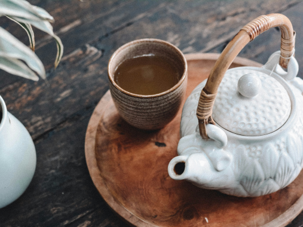

본문 바로가기
대메뉴 바로가기
생거진천치유의숲
메뉴열기
치유의숲 소개
치유의숲 소개
찾아오는길
시설배치도
시설안내
힐링비채
숯채화효소원
물소리맑음숲길
명상욕장
잔디마당
프로그램안내
체험료 안내
산림치유프로그램
체험예약
예약시주의사항
예약하기
예약확인 및 취소
참여마당
공지사항
자유게시판
포토갤러리
메뉴닫기
비쥬얼 팝업
Healing Forest
삶에 숲을 더하는
일상치유 공간
Healing Travle
여유를 느끼다,
나를 되찾다
Rest in the Forest
따스한 위로와
휴식의 공간
Program
오감힐링 오행비채
오감으로 치유하고 오행으로 건강을 유지하는 치유 프로그램
view more

향차욕(Tea Bath)
차를 마심으로써 몸 안을 씻는 심신치유 프로그램
view more
허브식초 만들기
힐링정원에서 직접 기른 허브를 발효시켜 건강한 식초 만들기
view more
이전버튼
다음버튼
 Rest in the Forest
Rest in the Forest